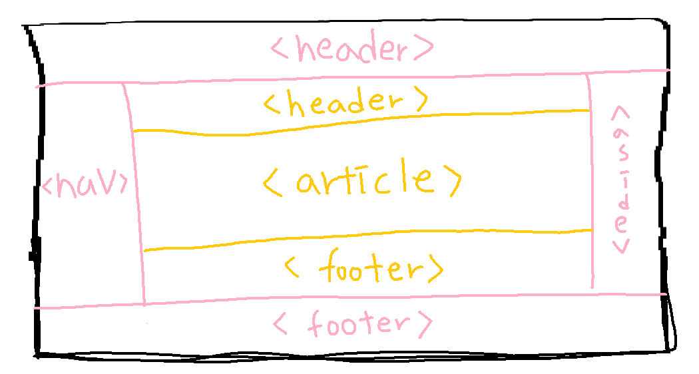

[HTML]
시멘틱 웹
1. 문서 구조화
: 검색 엔진이 좋아하는 웹 페이지 작성의 필요성 대두
2. 시멘틱 웹
: 원하는 정보를 찾아 눈으로 보고 이해하는 웹이 아니라, 컴퓨터가 이해 할 수 없는 웹
- 웹 문서를 구조화 하여 의미 있는 내용 탐색이 용이한 웹
- 사람이 인식하는 정보를 기계가 이해 할 수 잇도록 하는 컴퓨터 기술
- 이름만 보고도 문서 구조에서 어떤 역할을 하는지 쉽게 이해 할 수 있음

3. 시맨틱 태그
: 문서의 구조와 의미를 전달하는 태그
-> <header> <section> <article> <footer> <nav>
1) <header>
: 페이지나 섹션의 머리말에 해당
페이지 제목, 페이지를 소개하는 간단한 설명
2) <nav>
: 문서를 연결하는 네비게이션 링크의 모음
페이지 내 목차를 만드는 용도
3) <section>
: 주제별 콘텐츠 영역 구분하기
4) <article>
: 본문과 연관 있지만, 독립적인 콘텐츠를 담는 영역
블로그 포스트, 댓글, 보조 기사
5) <aside>
: 문서의 본문 내용에서 약간 벗어난 내용들을 넣음
페이지의 오른쪽이나 왼쪽에 주로 배치
6) <footer>
: 일반적으로 웹 문서의 꼬리말 영역
주로 사이트 제작자 정보, 저작권 정보 등 표시